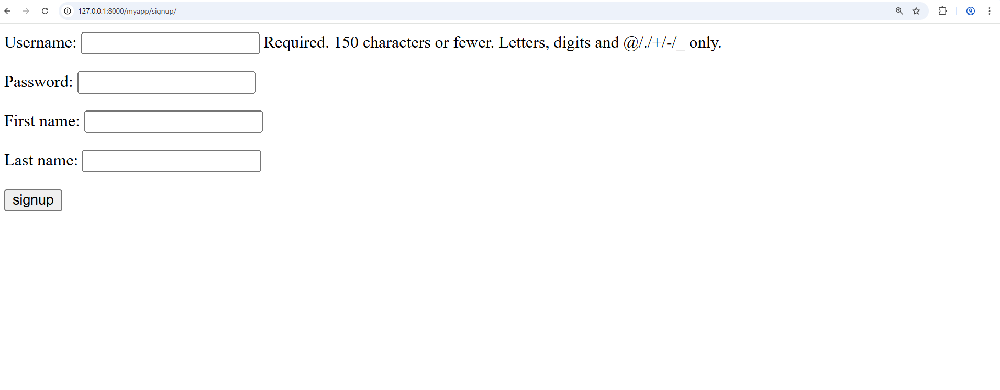

create supervisor
In Django, a superuser (admin/supervisor user) is created using Django's built-in authentication system.
Step 1: User Table
Static HTML files are placed inside the
templates/ folder.
myapp/form.py
from django.contrib.auth.models import User
...
class UserForm(forms.ModelForm):
class Meta:
model = User
fields = ['username', 'password', 'first_name', 'last_name']
myapp/view.py
def signup(request):
if request.method == "POST":
form = UserForm(request.POST)
if form.is_valid():
user=form.save(commit=False)
user.set_password(form.cleaned_data['password'])
user.save()
return redirect('home')
else:
form = UserForm()
return render(request, "signup.html", {'form': form})
myapp/view.py
...
path('signup/', views.signup, name="signup"),
Output
